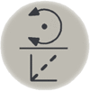

有三种方式选择动作模式：
使用 Toggle motion mode（切换动作模式）按钮。
使用 ABB 菜单上的 Jogging（微动控制）窗口。
使用 Quickset（快速设置） 菜单 Mechanical unit（机械装置），请参阅Quickset（快速设置）菜单，Mechanical unit（机械装置）。
按 Toggle motion mode reorient/linear（切换动作模式重定向/线性）按钮可切换动作模式。

使用此程序在 Jogging（微动控制）窗口中选择动作模式。
操作
Information
1
在 ABB 菜单中，点击 Jogging（微动控制）。
2
点击 Motion mode（动作模式）。
3
点击所需模式，然后点击 确定 菜单上，选择
做出该选择后，Joystick direction（控制杆方向）中将显示控制杆方向的含义。
控制杆方向。